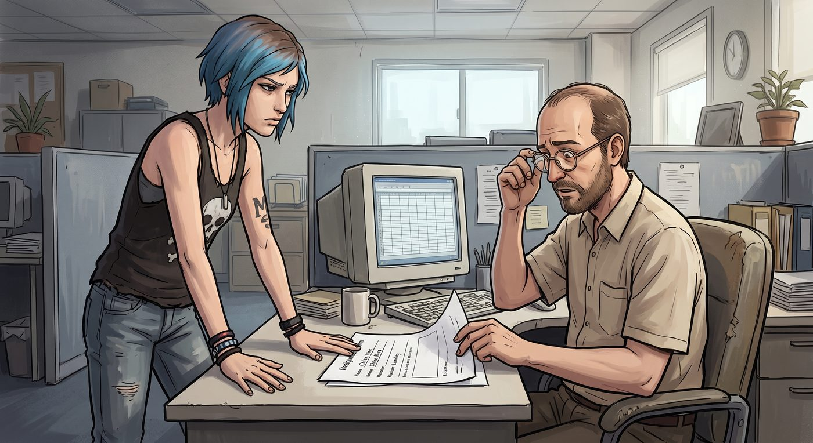

辭職與復工


一、體面的離開
第二週一早,Chloe 頂著一張生無可戀的臉,直接走進主管辦公室,把一張填好的辭職表格拍在桌上。
主管愣了一下,推了推眼鏡,一臉困惑地翻看那張表格:「妳確定?雖然說實話,妳的技術能力確實不如那位 Kenji 同學,對公司文化的熱情程度也不如其他幾位同學那麼……積極,」他斟酌著用詞,「但妳交上來的那幾份文檔,看得出來是真的認真在做,邏輯也清楚,算是這批實習生裡少數幾個『有在做事』的。」
Chloe 露出一個苦笑,誠懇地點點頭:「謝謝誇獎,真的。」
她低頭看了眼表格上那一欄「離職原因」,自己填的是工工整整的一行字:「個人生涯規劃調整,與公司文化、管理層、同事均無任何關係。」
滴水不漏,誰都挑不出毛病,也絕不留任何後患。
主管又勸了兩句挽留的話,見她態度堅決,只好無奈簽了字放人。
二、修車費的缺口
「所以妳這樣辭職,」Max 在放學路上聽完整件事,擔憂地問,「修車費的缺口怎麼辦?」
「回我媽餐廳唄,」Chloe 聳肩,語氣裡帶著點認命,「至少那邊雖然累,但至少是誠實的累,不用假裝自己很享受什麼『企業文化』。多打一週工,把缺口填上就是了。」
Max 一聽,眼睛瞬間亮了起來,幾乎是條件反射地掏出手機,滑開 Instagram,開始翻找最近流行的 cosplay 造型參考。
「妳先別費神了,」Chloe 立刻按住她的手機螢幕,語氣警惕,「我這次不想聽什麼市場報告分析。」
Max 的表情肉眼可見地垮了下來,那種失落感真實得讓人心軟——完全不是演出來討價還價的樣子。
Chloe 看著她這副模樣,心裡那點防線瞬間鬆動,嘆了口氣。
「……最多穿一天,」她從牙縫裡擠出這句話,「就一天,不能再多了。」
Max 瞬間眼睛發亮,像是聖誕節提前到來的孩子,忍不住立刻在小隊群組裡分享了這個「重大決定」。
三、備戰
消息才發出去不到十分鐘,Warren、Brooke 和 Kenji 就先後冒了出來,一副摩拳擦掌的架勢。
「聽說要重開女僕日?」Warren 興奮地打字,「我這次可以幫忙弄裝飾,上次點唱機的手感還沒過癮。」
「我可以重新設計一份限定菜單,」Brooke 也跟著附和。
「數據分析我來,」Kenji 一如既往地簡潔。
Chloe 看著手機螢幕上一條接一條的熱情回應,連忙按住 Max 的手,一臉緊張。
「不用不用,」她語速飛快,「就我們兩個低調弄一下就好,別搞得陣仗太大——上次那個限動已經夠嚇人了,再搞出圈,我怕整條街的人都跑來看熱鬧,到時候我媽這小店根本應付不來。」
「妳這個顧慮,其實站不住腳。」Brooke 的訊息很快跳出來,語氣一如既往地冷靜客觀,「上次那則限動的觸及率,已經證明了市場需求存在。與其讓熱度自然發酵、餐廳措手不及,不如我們提前準備好足夠的人力、庫存和動線規劃,把『出圈』這件事,從失控的意外,變成可控的行銷活動。」
「而且,」Kenji 緊接著補了一句,附上一張簡易的邏輯推演圖表,「根據上次的數據推算,如果完全不做任何準備,妳一個人加上 Max,面對可能翻倍甚至三倍的客流量,大概率會在開店後兩小時內崩潰——無論是出餐速度還是妳的情緒狀態。與其屆時手忙腳亂,不如現在多幾個人手分擔,反而能降低妳自己的負擔。」
Chloe 盯著那張條理分明、邏輯無懈可擊的圖表,張了張嘴,一時竟找不到反駁的切入點。
「……你們這是聯合起來對付我。」她哀怨地打完這句話。
「這叫團隊合作。」Brooke 回得理所當然。
Chloe 長嘆一口氣,終究還是敗下陣來,默許了這場「重開女僕日」正式升級成全員出動的籌備行動。
於是打工前一晚,整個小隊難得地認真運轉起來。Kenji 熬夜整理出一份簡短的市場分析,列出附近幾家同類型餐飲店的社群曝光數據和高峰時段客流建議;Brooke 設計了一份限定菜單,把 Chloe 的「地獄復仇者漢堡」正式定名收錄進去,還搭配了幾道應景的小點心;Warren 則扛著一堆彩帶和裝飾道具,親自跑去雙鯨餐廳,把店門口和窗台佈置得格外用心。
「這陣仗,」Joyce 看著突然熱鬧起來的餐廳籌備,忍不住感嘆,「比我自己開業那天還講究。」
四、拍照風波
打工當天清晨,Max 早早就穿戴整齊——完整的女僕裝造型,興沖沖地舉著相機,把同樣一身行頭、卻一臉生無可戀的 Chloe 拉到餐廳門口。
「來,」Max 興奮地調整著鏡頭角度,「先來個歪頭比愛心。」
Chloe 面無表情地照做,擠出一個比哭還難看的笑容。
Max 看著相機螢幕裡那張表情扭曲的臉,忍不住笑出聲:「不行不行,重來。要不,雙手比個貓爪?」
Chloe 硬著頭皮比了個貓爪,嘴角抽搐得像是在受刑。
「……好吧,」Max 舉手投降,退而求其次,「那生氣的臉?這個妳應該擅長。」
Chloe 立刻恢復本色,雙手抱胸,狠狠瞪向鏡頭,那股毫不掩飾的怨念寫滿了整張臉。
「完美!」Max 興奮地連拍好幾張,又靈機一動,「撲克臉也來一張,反差萌路線。」
Chloe 面無表情地站定,那種「生無可戀又不得不營業」的複雜神態,意外地拿捏得恰到好處。
Max 火速把幾張照片修圖、拼貼,配上調皮的文字說明,發到了自己的 Instagram 限時動態上。
五、意外爆紅
開店不到一小時,Max 的手機震動個不停——那則限時動態的瀏覽量和點讚數,以肉眼可見的速度暴漲,底下留言區塞滿了各種讚嘆和調侃:「這反差感絕了」「生氣臉也太好笑了吧」「這家店在哪,我要去朝聖」。
不少本地的年輕帳號紛紛轉發,甚至有幾個小有名氣的美食部落客留言詢問地址。
「Chloe,」Max 舉著手機衝進廚房,語氣裡帶著壓不住的興奮,「妳看,妳那張生氣臉,現在是我這條限動裡點讚最高的一張!」
Chloe 湊過去瞄了一眼那個持續跳動的數字,又看了看自己那張毫無掩飾的臭臉照片,一時哭笑不得。
「所以,」她苦笑著搖頭,「我這輩子最不情願的一張照片,反倒成了我的代表作?」
「藝術往往就是這麼諷刺,」Max 得意地收起手機,笑得眉眼彎彎,「準備好了嗎,今天的客人,可能會比妳想像中多很多。」
窗外,已經有幾個舉著手機、明顯是衝著限動來的年輕顧客,好奇地探頭張望著雙鯨餐廳的招牌。